Introduction to Linear Models: Building and Interpreting Linear Regressions
Stephanie J. Spielman
Data Science for Biologists, Spring 2020
08_linear_models.RmdCAUTION: This is NOT a full-fledged statistics course. This document focuses on performing and interpretting linear regression models rather than their mathematical underpinnings.
Cheatsheet chunk
###### Building linear models with lm ###### # Single predictor lm(Y ~ X, data = dataframe) -> lm_output # Multiple independent predictors lm(Y ~ X + X1 + X2, data = dataframe) -> lm_output # Multiple predictors with an interaction effect lm(Y ~ X*X1, data = dataframe) -> lm_output ##### Examining linear model output ###### # Standard view of fitted model summary(lm_output) # Tidy views of fitted model with the broom library broom::tidy(lm_output) ## Coefficients broom::glance(lm_output) ## R^2 and other _model fit_ metrics broom::augment(lm_output) ## Get mmmooorrree information # Extract model info with the modelr library modelr::add_residuals(dataframe, lm_output) # residuals for each observation
Note:
This week, we have a rare treat. A dear old friend of mine, Stephanie Spielman, has a lesson she’d like some feedback on. You are very welcome to make any comments or suggestions on the GitHub Repo for the lesson.
What is a linear model?
In statistics and data science, we often want to describe how the value of one variable depends on and/or can be explained/predited by the value of one or more other variables. For example, if we know an individual’s height, could we reasonably predict their weight? Said otherwise: to what extent can height explain variation we see in weight? Potentially we might want to also consider a lot more information like the person’s age, biological sex, health and diet, etc, in addition to just their height. The variable we are interested in predicting (here, weight) is known as the response/dependent variable. We are interested in seeing how certain other variables can provide meaningful information about weight, and we call these other variables predictor/explanatory/independent variables.
The term “linear model” implies a statistical framework for quantifying to what degree one or more predictor variables describes the variation seen in a response variable. Linear models can answer questions like…
- Which of the predictor variables show a significant relationship with the response variable?
- In this case, significant (more or less..) implies that the predictor variable’s values explain, to some degree, variation seen in the response variable. An insignificant (again, more or less..) predictor is one whose explanatory abilities on the variation in the response variable are no different from random chance.
- How does do we expect the response value changes, on average, when the predictor value changes?
- How much variation in the response variable does each predictor variable explain? And conversely, how much variation in the response variable is unexplained?
The mathematical model form of the simplest linear model is:
\[\begin{equation} Y = \beta_1X_1 + \beta_0 + \epsilon \end{equation}\]
The \(Y\) is our response, and all \(X\) variables are our predictors - in the simple example above, there is a single predictor \(X_1\). Each \(\beta\) (Greek letter “beta”) is a given predictor’s coefficient, and they quantify the relationship between each predictor and the response. The \(\epsilon\) (Greek letter “epsilon”) represents the error in the model (read on!). In fact, the formula above is actually the formula for a line, or as you may be used to seeing it, \(Y = mX + B\). In our new statistical notation, this \(\beta_1\) is the slope m, and this \(\beta_0\) is the y-intercept B. More generally for N predictors, we write the model as (rearranged slightly)
\[\begin{equation} \label{eq:full} Y = \beta_0 + \beta_1X_1 + \beta_2X_2 + \beta_3X_3 ... + \beta_NX_N + \epsilon \end{equation}\]
The error term \(\epsilon\) is known as the model’s residuals - how much variation in the response is residual (left over) after considering all the predictors? In other words, what percent of variation in the response variable is unexplained by the predictor variable(s)? It is virtually never true that the predictors will capture 100% of the variation in the response, and the uncaptured percent falls into that \(\epsilon\) term.
Practically, what does this formula mean? We can conceptualize this most easily with a simple linear regression (\(Y = \beta_1X_1 + \beta_0\)). Finding the line-of-best-fit, which we will call the regression line, is an exercise is finding the best values (aka values with the best fit to the data) for the coefficients \(\beta_1\) and \(\beta_0\).
One of the most common procedures for fitting a model is called “Ordinary Least Squares,” an algorithm that finds the line (aka best coefficient values!) that minimizes the “sum of squares” of the residuals. The residuals themselves are the distance between each point and the regression line, and the sum of squares in this case is, you guessed, the sum of the squared residuals. We’ll call it “RSS”: the residual sum of squares. Consider this example (images from this book) that shows the relationship between the age of a given lion the the proportion of its nose that is black (nose color changes over time for cats and dogs! awwww):

The computer will try to find the best combination of values for the slope (\(\beta_1\)) and Y-intercept (\(\beta_0\)) that makes the RSS as small as possible by testing out hundreds or thousands of different values. This is what we mean by fitting a model: What set of parameter values (fancy word for variables) match the data the best?
In the three images below, we see three different ways this regression line could be drawn. Each line segment from the the point to the regression line is a residual!

- “Large deviations”: Very high RSS. This line is a poor fit to the data.
- “Smaller deviations”: A low RSS. The line is a better, but not best, fit to the data.
- “Smallest deviations”: This line represents the line that minimizes the RSS. Its corresponding slope and intercept are our model parameters. It turns out this slope is about \(\beta_1 = 10.64\) and the intercept is about \(\beta_0 = 0.88\). Our final fitted model would therefore be \(Y = 10.64X_1 + 0.88 + \epsilon\). In the coming sections we will learn how to interpret these quantities.
Assumption of linear regressions
In this class, we will talk about two general (NOTE: this is a pun, because actually we are talking about “generalized linear models” - you should be aware that my language choice is actually really funny) types of linear models:
- “Linear regression”, which are used to model NUMERIC response variables (this document)
- “Logistic regression”, which are used to model BINARY (categorical) response variables (e.g., “Yes/No” categories) (a forthcoming document)
These models make several key assumptions about the underlying predictors and response variable. These assumptions represent properties in the data itself which must be satisified in order for the models to be reliably interpreted. Linear regressions are only valid if these assumptions are met:
- Numeric predictors must have a linear relationship with the numeric response. For example, in the two plots below, the LEFT shows a linear relationship: This data is suitable for analysis with a linear regression. The RIGHT shows a non-linear relationship: This data is not suitable for analysis with a regression (unless you transform) the data.
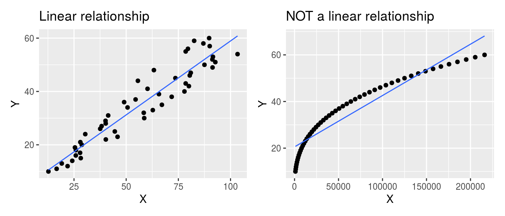
- Categorical predictors should have uniformly-distributed variance. For example, in the two plots below, the LEFT shows a numeric variable whose different distributions across the categorical variable have about the same spread (although the means differ!): This data is suitable for analysis with a linear regression. The RIGHT shows an example where variance is NOT equally distributed, and this may not be suitable for analysis with a linear regression.
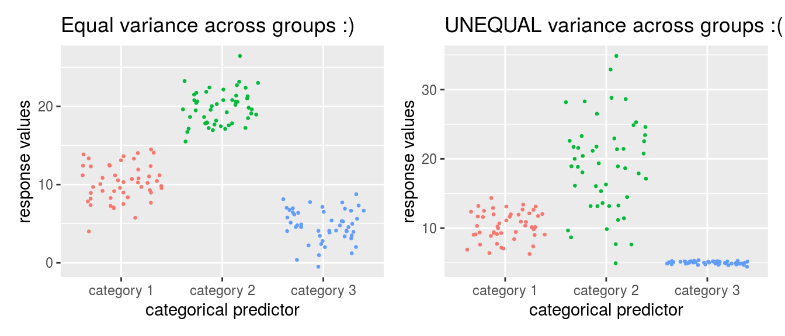
- The residuals of the fitted model should be normally-distributed (a bell curve). There is another type of plot, called a “Q-Q plot” (“quantile-quantile”) we will see later in this document for more carefully examining residuals.
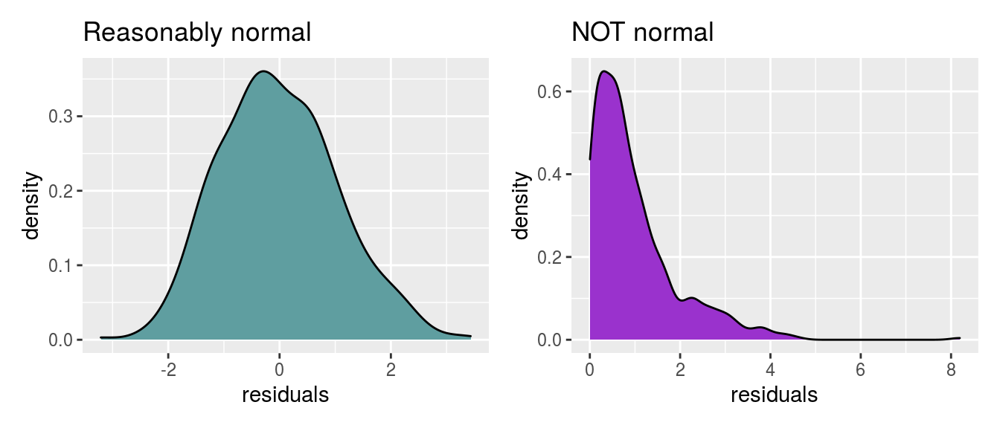 + A common misconception for regression is that the data itself must be normally distributed. This is not true! It’s the residuals that must be normally distributed, which can only be examined after the model is fitted. Again, there is no requirement that numeric predictors themselves or the response itself be normally distributed!!
Analyses that are actually all linear regression models
You will often hear these fancy statistical names for different hypothesis tests. Fundamentally, they are all linear regressions with different types of predictors. Really there is no need to distinguish them!! You just need to know how to interpret predictor coefficients, and you can make any model you want. Again, all linear regressions have a numeric response.
- Correlation: Read on to the the next section!!
- Simple linear regression: Models with a single numeric predictor variable
- Multiple linear regression: Models with several numeric predictor variable
- ANOVA (Analysis of Variance): Models with a single categorical predictor variable
- MANOVA (Multivariate Analysis of Variance): Models with a multiple categorical predictor variables
- ANCOVA (Analysis of Covariance): Models with a single categorical AND one or more numeric predictor variables
- MANCOVA (Multivariate Analysis of Covariance): Models with multiple categorical AND multiple numeric predictor variables
In fact, so are hypothesis tests like t-tests, and similarly all their non-parametric equivalents - Mann-Whitney aka Wilcoxon, sign test, and Kruskal-Wallis test. This post goes into extensive depth about the how and why of this Truth.
Briefly, correlation
A closely related (both conceptually and mathematically) topic here is correlation, which is a quantity that tells us whether two variables appear to be associated, or non-independent. Correlation does NOT IMPLY causation - it merely implies an observable pattern of association. There are many different wants to quantify a correlation, but perhaps the most commonly-used one is Pearson correlation. This quantity measures strength and direction a of linear association between normally-distributed numeric variables - it is virtually mathematically equivalent to a simple linear regression. This is measured with the correlation coefficient r which can be any value in \(-1 \leq r \leq 1\). Below are shown examples of data with PERFECT correlations: there is a perfect x-y association, but the directions are different. There is also an example of NO correlation.
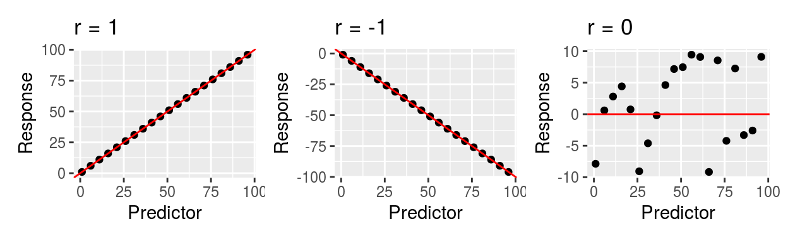
The strength of the relationship is heavily influenced by noise (images from this book). The farther points are from the middle, the more error (residuals!!) there is, and hence the lower the correlation.

But be careful!! The computer will still calculate a correlation even if the data is not linearly related! The correlatio below is NOT VALID because the assumption of linearity has not been met. Always plot your data!!!
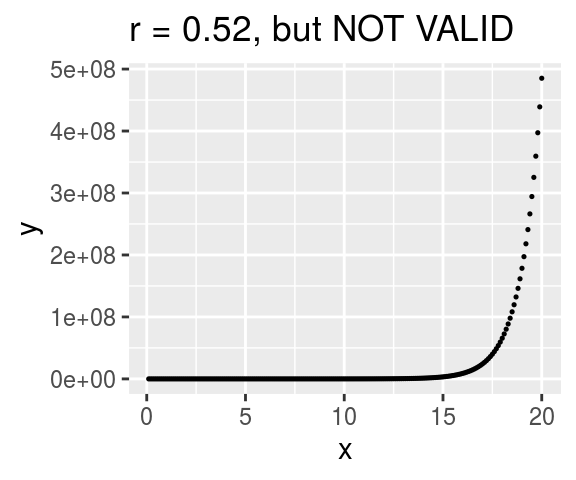
There are other types of correlations that can be employed (for example, Spearman rank correlation) when the data is not linearly related. Fundamentally, if you run a linear regression, you have implicitly run a correlation. Have some fun with correlations by practicing guessing the value for r.
Examples and interpretation
All examples will use the external dataset crabs and assume \(\alpha=0.05\). This dataset contains physical measurements from 200 crabs, including their sex (M/F), color (orange or blue), and various other quantities measured in millimeters (mm). The goal of these examples is model body depth in crabs. Therefore, the column body_depth is our response variable.
crabs <- read_csv("https://raw.githubusercontent.com/sjspielman/datascience_for_biologists/master/spring2020/rmd_lessons/lm_files/crabs.csv") ## Parsed with column specification: ## cols( ## color = col_character(), ## sex = col_character(), ## frontal_lobe = col_double(), ## rear_width = col_double(), ## carapace_length = col_double(), ## carapace_width = col_double(), ## body_depth = col_double() ## ) dplyr::glimpse(crabs) ## Rows: 200 ## Columns: 7 ## $ color <chr> "blue", "blue", "blue", "blue", "blue", "blue", "blue… ## $ sex <chr> "M", "M", "M", "M", "M", "M", "M", "M", "M", "M", "M"… ## $ frontal_lobe <dbl> 8.1, 8.8, 9.2, 9.6, 9.8, 10.8, 11.1, 11.6, 11.8, 11.8… ## $ rear_width <dbl> 6.7, 7.7, 7.8, 7.9, 8.0, 9.0, 9.9, 9.1, 9.6, 10.5, 10… ## $ carapace_length <dbl> 16.1, 18.1, 19.0, 20.1, 20.3, 23.0, 23.8, 24.5, 24.2,… ## $ carapace_width <dbl> 19.0, 20.8, 22.4, 23.1, 23.0, 26.5, 27.1, 28.4, 27.8,… ## $ body_depth <dbl> 7.0, 7.4, 7.7, 8.2, 8.2, 9.8, 9.8, 10.4, 9.7, 10.3, 1…
Simple linear regression: Single numeric predictor
Let’s begin with a simple regression to examine the relationship between carapace length and body depth, specifically to what extent body depth can be explained by carapace length. Therefore, carapace length is our predictor (X) variable, and body depth is our response (Y) variable.
The very first thing we should do is VISUALIZE our data . Make sure that each numeric predictor (in this case there is only 1!) indeed has a roughly linear relationship to the response. Indeed, this relationship looks linear, and apparantly (quite strongly!) positively related, so we are good to go.
# predictor goes on X, response goes on Y ggplot(crabs, aes(x = carapace_length, y = body_depth)) + geom_point()

We perform regressions using the function lm() (any guesses what this stands for?).
## perform linear regression and save as model_fit ## Y ~ X !!!!!!!!!!!!!! ## RESPONSE ~ PREDICTOR !!!!!!!!!!!!!!!! model_fit <- lm(body_depth ~ carapace_length, data = crabs) ## view output with summary(). Ugly, useful for getting a visual overview. summary(model_fit)
##
## Call:
## lm(formula = body_depth ~ carapace_length, data = crabs)
##
## Residuals:
## Min 1Q Median 3Q Max
## -1.96587 -0.47864 0.07071 0.49976 1.43543
##
## Coefficients:
## Estimate Std. Error t value Pr(>|t|)
## (Intercept) -1.15527 0.20517 -5.631 6.09e-08 ***
## carapace_length 0.47300 0.00624 75.803 < 2e-16 ***
## ---
## Signif. codes: 0 '***' 0.001 '**' 0.01 '*' 0.05 '.' 0.1 ' ' 1
##
## Residual standard error: 0.6266 on 198 degrees of freedom
## Multiple R-squared: 0.9667, Adjusted R-squared: 0.9665
## F-statistic: 5746 on 1 and 198 DF, p-value: < 2.2e-16Interpreting the model output
Call simply reminds us of the linear model formula we specified when using
lm().Residuals shows the five-number summary of the distribution of the residuals.
Coefficients tell us our \(\beta\) values. Their Estimate is the value the model returned, Their Std. Error indicates how close/far these model estimates, derived from the sample, likely are from the “true” population values. The t value is t statistic associated with the estimate’s significance, and the final column Pr(>|t|) is the P-value associated with the t statistic - it tells us if the coefficient is significant or not. The null hypothesis for any coefficient is “Coefficient = 0.” Therefore, a significant predictor coefficient means we are fairly sure it’s value is not 0.
(Intercept) is our fitted value for \(\beta_0\). It tells us: What is the EXPECTED VALUE of the response variable when the numeric predictor value is 0? In this case, what do we expect the average body depth will be when a crab’s carapace length is 0 mm? Here, we expect that crabs will have a body depth of -1.155 mm, on average, when their carapace length is 0. We can also write this as -1.155±0.205 mm to acknowledge the standard error! This is of course NOT realistic and illustrates perfectly that you need to be careful to interpret coefficients with biological intuition! Just because the computer spits out a number doesn’t mean it’s meaningful. No crabs will have a body depth of 0mm. Regardless, this quantity needs to be here to fulfill the mathematical model itself - we’re just smart enough to know that the mathematical model is terrible at biology. The intercept is highly significant (P=6.09e-08). Therefore, there is evidence the intercept differs from 0.
carapace_length is our fitted value for \(\beta_1\). It tells us: What is the EXPECTED change of the response the predictor increases by a unit of 1? In this case, by how much do we expect body depth will increase/decrease when the carapace length goes up by 1? Here, we expect for every 1 mm increase in carapace length, body depth will increases by 0.473 mm (or, 0.473±0.00624 mm). Remember in this case, this value is the slope (0.473 = rise/run = \(\Delta\)body depth/\(\Delta\)carapace length = 0.473/1 = 0.473 increase in body depth for ever 1 increase in carapace length). The P-value here is highly significant at P<2.2e-16 (this is nearly R’s lower bound for reporting tiny P-values), so we quite confident that the true value indeed differs from 0.
Residual standard error: The standard error associated with residuals. The closer this value is to 0, the better our model fit. We won’t focus much on this quantity, but be aware that large values here indicate the model is rather poor. This value of 0.6266 is fairly small.
Multiple R-squared and Adjusted R-squared give the \(R^2\) associated with the model. A model’s \(R^2\) tells you the percent of variation in the response that can be explained by the predictors. This is SUPER important (and note, it is actually the squared Pearson correlation coefficient!). The “Adjusted R-squared” is somewhat more reliable for consideration - it corrects for any overfitting artifacts inherent in modeling, so focus on this value. It’s associated P-value is on the next line (here, P<2.2e-16), and the associated null hypothesis for this P-value is \(R^2 = 0\). In this model, 96.65% of the variation in body depth can be explained by carapace lengths. 3.35% of the varation in body depth is therefore UNEXPLAINED by our model. That 3.35% is sneakily hidden in the \(\epsilon\) term of the fitted linear model formula. This \(R^2\) is very close to 1 (100%) - this is a really really good model.
Visualizing the model
We can visualize this output with a scatterplot and geom_smooth()! This is why we’ve been saying method = "lm" in geom_smooth() - this function adds a trendline, and by specify “lm” we are telling geom_smooth() to use a linear model to determine the trendline:
# predictor goes on X, response goes on Y ggplot(crabs, aes(x = carapace_length, y = body_depth)) + geom_point(size = 0.5) + ## making the points small to help see the regression line geom_smooth(method = "lm", ## make a trendline using "lm" color = "navy", ## make the trendline navy size = 0.5, ## make the line small to help see the confidence interval for TUTORIAL REASONS fill = "deeppink4") + ## fill for the confidence interval labs(x = "Carapace length (mm)", y = "Body depth (mm)", title = "Linear regression to predict crab body depth") + annotate("text", ## geom to annotate with is text annotation x = 20, y = 30, ## coordinates of the label, decided after trying several places.. label = "R^2 == 0.966", ## label itself, double equals is needed for use with parse=T parse=T, ## makes label actually show as a formula, with squared as superscript! color = "firebrick", size = 5) + ## font color and size theme_bw()
## `geom_smooth()` using formula 'y ~ x'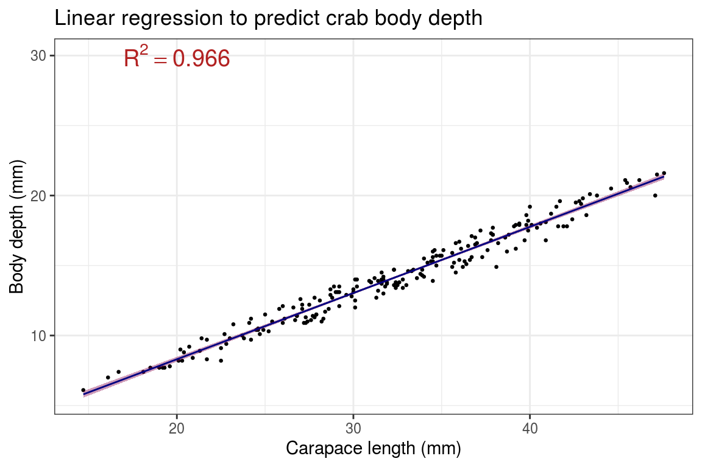
Critical followup: What is a confidence interval? A confidence interval (CI) is meant to help convey error in the estimate - in this case, the confidence bands you see (pink area around the line) represents the error associated with our fitted slope aka our model’s \(\beta_1\) estimate! It is directly related to “standard error”, so in the function geom_smooth() you can turn it off as geom_smooth(se=F) to not display it.
Loosely speaking, a 95% CI (ggplot and many others use 95% confidence interval by default) means: Assuming all the lovely assumptions of our statistical framework, there is 95% probability that the TRUE VALUE OF THE SLOPE is within the CI. Stated more accurately, if you took N random samples of crabs and calculated their regressions of body depth across carapace length, line (slope and intercept!) would fall within the 95% shaded area CI for 95% of the samples.
For an excellent intuitive understanding of what this means, see the second plot example in this package’s README.
Checking the assumption of normal residuals
One of the assumptions of linear regressions is that residuals should be normally distributed. Residuals are calculated as part of the model itself, so the goal is to check the residuals AFTER you perform the model to see if it worked out ok. If the residuals are severely not normal, it means there were some problems with the model itself and you need to rethink your approach - which predictors to include/exclude? add in interaction effect [keep reading!!]? transform some of the data?
We can check this assumption using a Q-Q plot, specifically a NORMAL QQ plot which shows the relationship between your data and a theoretical prediction for what the data would like if it were normally distributed. If the data falls roughly in a straight line, the data is distributed normally!!! If not, not normal :(
First, we need to get the residuals themselves out of the model - my preferred way for doing this uses the broom() package. This packages tidies (sweeps up?…sigh.) model output into nice little tibbles, and it has three main functions we want: broom::tidy(), broom::glance(), and broom::augment(). The first two are nice for collecting the ugly summary data into tibbles. We simply pass in the model output itself.
# redefining model just to orient you back model_fit <- lm(body_depth ~ carapace_length, data = crabs) # assumes broom library is loaded! # it comes installed with tidyverse, but needs to be loaded with library(broom) in the setup chunk. # Gives coefficients in tidy form broom::tidy(model_fit)
## # A tibble: 2 x 5
## term estimate std.error statistic p.value
## <chr> <dbl> <dbl> <dbl> <dbl>
## 1 (Intercept) -1.16 0.205 -5.63 6.09e- 8
## 2 carapace_length 0.473 0.00624 75.8 3.13e-148# Gives R^2 (and some other values, stay tuned!!!) in tidy form broom::glance(model_fit)
## # A tibble: 1 x 12
## r.squared adj.r.squared sigma statistic p.value df logLik AIC BIC
## <dbl> <dbl> <dbl> <dbl> <dbl> <dbl> <dbl> <dbl> <dbl>
## 1 0.967 0.967 0.627 5746. 3.13e-148 1 -189. 385. 395.
## # … with 3 more variables: deviance <dbl>, df.residual <int>, nobs <int>## Gives a whoooole bunch of under-the-hood info in tidy form - tacked onto the data itself!!! broom::augment(model_fit)
## # A tibble: 200 x 8
## body_depth carapace_length .fitted .resid .std.resid .hat .sigma .cooksd
## <dbl> <dbl> <dbl> <dbl> <dbl> <dbl> <dbl> <dbl>
## 1 7 16.1 6.46 0.540 0.875 0.0304 0.627 1.20e-2
## 2 7.4 18.1 7.41 -0.00596 -0.00963 0.0244 0.628 1.16e-6
## 3 7.7 19 7.83 -0.132 -0.212 0.0220 0.628 5.08e-4
## 4 8.2 20.1 8.35 -0.152 -0.245 0.0193 0.628 5.90e-4
## 5 8.2 20.3 8.45 -0.247 -0.397 0.0188 0.628 1.51e-3
## 6 9.8 23 9.72 0.0764 0.123 0.0132 0.628 1.01e-4
## 7 9.8 23.8 10.1 -0.302 -0.485 0.0118 0.628 1.41e-3
## 8 10.4 24.5 10.4 -0.0331 -0.0532 0.0107 0.628 1.53e-5
## 9 9.7 24.2 10.3 -0.591 -0.949 0.0112 0.627 5.10e-3
## 10 10.3 25.2 10.8 -0.464 -0.744 0.00973 0.627 2.72e-3
## # … with 190 more rowsFocusing on the augment() output, we see there are 136 rows - indeed there are 136 crabs!! Each row represents an outcome from the model. The particular columns we may want are .fitted and .resid:
-
.fitted: What does the model formula give for the response at this predictor? For example, row 1 is an observation with carapace length of 16.1 mm and body depth of 7 mm. If I put the predictor 16.1 into the model \(Y = 0.473X - 1.16\), I’d get: \((0.473\times16.1) - 1.16 = 6.46\)!! We won’t use this quantity now, but it’s really nice to know about. -
.resid: The residual associated with that row - this column contains our residuals!!!
For making QQ plots, we’ll use the base R functions qqnorm() (for a normal distribution QQ plot) and qqline() (in this case base R is a lot easier than ggplot2). They are run as separate commands entirely, but R will always assume qqline() should go on top of the most recently run QQ plot:
## plot broom::augment(model_fit) -> augmented_fit # plot the .resid column (yes it starts with a period), and add a line for visual guidance. qqnorm(augmented_fit$.resid) qqline(augmented_fit$.resid, col = "red") #Spielman personal preference, I like making it a color. base R uses "col"
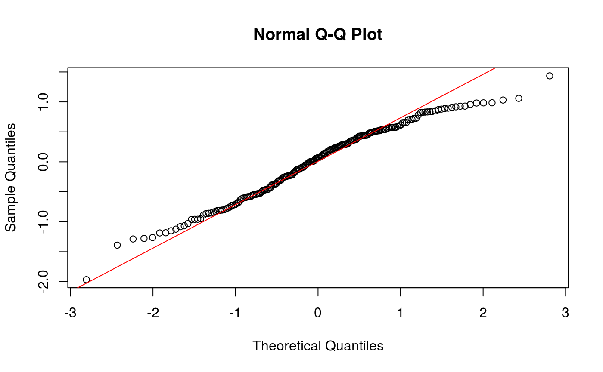
This is pretty good, but could be better - the tails of the plot, in particular the right, have a bit of deviation, but not so much that I’d worry. So, I’m satisified with the assumptions being met for this model.
Here are examples of how the plot might look when it’s time to start worrying: 
Notably there is another neat way to get the residuals using the package modelr (within tidyverse, but needs to be loaded). We will use several more functions from this VERY helpful (but caution, often times very advanced) package soon!. The function add_residuals() can be used this way:
## first argument is the data itself, second is the model object ## output column `resid` contains the goods modelr::add_residuals(crabs, model_fit)
## # A tibble: 200 x 8
## color sex frontal_lobe rear_width carapace_length carapace_width body_depth
## <chr> <chr> <dbl> <dbl> <dbl> <dbl> <dbl>
## 1 blue M 8.1 6.7 16.1 19 7
## 2 blue M 8.8 7.7 18.1 20.8 7.4
## 3 blue M 9.2 7.8 19 22.4 7.7
## 4 blue M 9.6 7.9 20.1 23.1 8.2
## 5 blue M 9.8 8 20.3 23 8.2
## 6 blue M 10.8 9 23 26.5 9.8
## 7 blue M 11.1 9.9 23.8 27.1 9.8
## 8 blue M 11.6 9.1 24.5 28.4 10.4
## 9 blue M 11.8 9.6 24.2 27.8 9.7
## 10 blue M 11.8 10.5 25.2 29.3 10.3
## # … with 190 more rows, and 1 more variable: resid <dbl>Simple ANOVA: Single categorical predictor
What if, rather than a numeric predictor (carapace Length), we had a categorical predictor, say sex? Here we might ask: Does sex predict body depth in crabs? In the context of running an explicit ANOVA, one might phrase it as: Does the variation in body depth differ across sex in crabs? They are in fact the same question!
Again, begin with a quick-and-dirty visualization. Here we’d like to see that the distribution of body depths has similar spread across sex categories (the assumption of equal variance for categorical predictors!). Indeed, these two distributions show similar amounts of spread (how much relative space along the Y axis they take up), so assumption is met.
ggplot(crabs, aes(x = sex, y = body_depth, color=sex)) + geom_jitter()
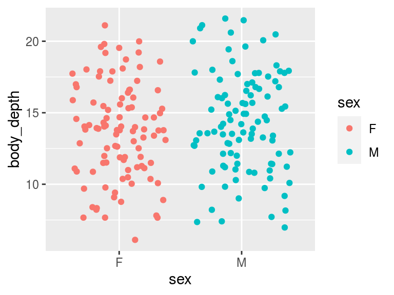
Let’s run the model:
## perform linear model and save as model_fit model_fit <- lm(body_depth ~ sex, data = crabs) ## view output with summary(). summary(model_fit)
##
## Call:
## lm(formula = body_depth ~ sex, data = crabs)
##
## Residuals:
## Min 1Q Median 3Q Max
## -7.624 -2.449 0.076 2.463 7.376
##
## Coefficients:
## Estimate Std. Error t value Pr(>|t|)
## (Intercept) 13.7240 0.3420 40.134 <2e-16 ***
## sexM 0.6130 0.4836 1.268 0.206
## ---
## Signif. codes: 0 '***' 0.001 '**' 0.01 '*' 0.05 '.' 0.1 ' ' 1
##
## Residual standard error: 3.42 on 198 degrees of freedom
## Multiple R-squared: 0.00805, Adjusted R-squared: 0.00304
## F-statistic: 1.607 on 1 and 198 DF, p-value: 0.2064This is where the order of categorical variables become really important: All linear model output when categorical predictors are used assumes a given level of the categorical variable. Unless you re-factor a variable explicitly, levels will be used in alphabetical order - here, “F” comes before “M”.
Coefficients associated with categorical predictors have a somewhat different interpretation
We see the intercept is highly significant (P<2e-16) with a value of 13.724. Intercepts for a model with a categorical predictor mean: What is the expected body depth of the baseline level, which in this case is “F” (female)?. We expect the average female crab to have a body depth of 13.72 mm. This is the “categorical” analogy of a standard intercept that would be interpreted as, “what is body depth when sex is 0?”. Of course, as a categorical variable, sex cannot be 0 - it’s F or M in this dataset.
The coefficient associated with SexM means, How does being male influence body depth relative to the factor baseline, female? On average, males have body depth 0.613 mm larger than females. (Notably, for a categorical variable with N levels, there will be see N-1 coefficients). In this case, however, the P-value is NOT significant (P=0.206). Similarly our adjusted R^2 is not significant. Therefore, we actually do not see evidence that the average male body depth differs from the average female body depth.
This model therefore tells us: sex is NOT explanatory of body depth in crabs! Either way, let’s think how we might visualize the model results. The strip plot used above to check assumptions is a pretty good way to do it, or any other way to show distributions. That said, these models operate on means, so it might be useful to actually visualize the means specifically. A neat trick for doing this comes from stat_summary()!!
ggplot(crabs, aes(x = sex, y = body_depth, color = sex)) + geom_jitter() + labs(x = "Sex", y = "Body depth (mm)") + theme(legend.position = "none") + stat_summary(fun.data = "mean_se", # calculate mean and se color = "black")
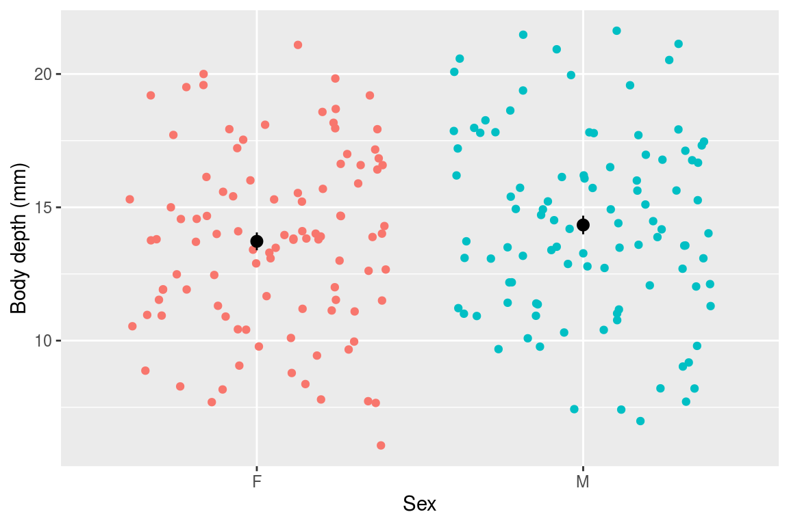
As you can see, those means look about identical and their standard errors overlap - it makes sense that the model did not show evidence that sex is predictive of body depth.
LM with numeric and categorical predictors
Let’s see how to run and interpret a model with BOTH numeric and categorical predictors. We will examine how color and carapace length together might be predictive of body depth in crabs. Said otherwise: We’ve seen how carapace length influences body depth. Does this effect persist when controlling for color? Importantly, when you have multiple predictors, the model assumes they are FULLY INDEPENDENT and ENTIRELY UNRELATED. Of course this is not always true - read on to learn more about how to deal with this issue!
Let’s run the model with multiple predictors, which we simply add together in the formula
## order of predictors does NOT matter model_fit <- lm(body_depth ~ color + carapace_length, data = crabs) ## view output with summary(). summary(model_fit) ## ## Call: ## lm(formula = body_depth ~ color + carapace_length, data = crabs) ## ## Residuals: ## Min 1Q Median 3Q Max ## -1.31623 -0.22544 0.00332 0.27120 1.08043 ## ## Coefficients: ## Estimate Std. Error t value Pr(>|t|) ## (Intercept) -0.996643 0.123044 -8.10 5.65e-14 *** ## colororange 1.044956 0.055373 18.87 < 2e-16 *** ## carapace_length 0.451781 0.003899 115.87 < 2e-16 *** ## --- ## Signif. codes: 0 '***' 0.001 '**' 0.01 '*' 0.05 '.' 0.1 ' ' 1 ## ## Residual standard error: 0.3749 on 197 degrees of freedom ## Multiple R-squared: 0.9881, Adjusted R-squared: 0.988 ## F-statistic: 8204 on 2 and 197 DF, p-value: < 2.2e-16
When considering BOTH color and carapace length as model predictors, we find:
- The intercept means your average blue (the baseline level of
color) crab with a carapace length of 0 has a body depth of -0.997 mm. It’s highly sigificant but unrealistic - moving on. - The “colororange” means when controlling for carapace length, your average orange crab’s body depth will be ~1.045 mm larger than an average crab. Again, highly significant.
- The “carapace_length” coefficient means when controlling for color, the average crab’s body depth increases by 0.452 per 1 mm increase in carapace length, and it’s highly significant.
- The predictors explain ~98.8% of the variation in body depth - our model appears to have improved in predictive ability by jointly considering color with carapace length! A mere 1.2% of variation in body depth is unexplained by the two significant predictors.
Let’s check our residuals as well with a QQ plot. We find that they are indeed normally distributed, so the model’s assumptions have been met and we can rely on its output.
augment(model_fit) -> augmented_fit qqnorm(augmented_fit$.resid) qqline(augmented_fit$.resid, col="red")
How can we visualize this model? We can again make a scatterplot, and show the trend lines for each sex:
ggplot(crabs, aes(x = carapace_length, y = body_depth, color = color)) + geom_point() + labs(x = "Carapace length (mm)", y = "Body Depth (mm)", color = "Crab color") + scale_color_manual(values = c("blue", "orange")) + # why not! geom_smooth(method = "lm") + annotate("text", x = 20, y = 30, label = "R^2 == 0.988", parse=T, size=5)
## `geom_smooth()` using formula 'y ~ x'
LM with multiple numeric predictors
Now we will look at a model with multiple numeric predictors, carapace width and carapace length. We know already that carapace length has a linear relationship with body depth from earlier in this document, so let’s just check out the linearity of body depth/carapace width. Indeed, the relationship is linear, so let’s proceed.
ggplot(crabs, aes(x = carapace_width, y = body_depth)) + geom_point()
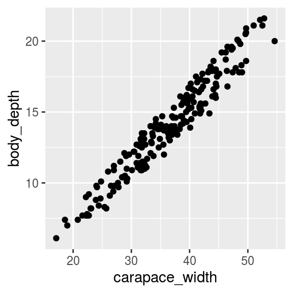
Again, we can simply add predictors together (order does not matter!):
## perform linear model and save as model_fit model_fit <- lm(body_depth ~ carapace_width + carapace_length, data = crabs) ## view output with summary(). summary(model_fit)
##
## Call:
## lm(formula = body_depth ~ carapace_width + carapace_length, data = crabs)
##
## Residuals:
## Min 1Q Median 3Q Max
## -1.78651 -0.35206 -0.01679 0.35397 1.61916
##
## Coefficients:
## Estimate Std. Error t value Pr(>|t|)
## (Intercept) -0.65396 0.17540 -3.728 0.000252 ***
## carapace_width -0.45995 0.04636 -9.922 < 2e-16 ***
## carapace_length 0.97907 0.05126 19.099 < 2e-16 ***
## ---
## Signif. codes: 0 '***' 0.001 '**' 0.01 '*' 0.05 '.' 0.1 ' ' 1
##
## Residual standard error: 0.513 on 197 degrees of freedom
## Multiple R-squared: 0.9778, Adjusted R-squared: 0.9776
## F-statistic: 4336 on 2 and 197 DF, p-value: < 2.2e-16Our model has found:
- You average crab with carapace width and carapace length both equal to zero will have, on average, a body depth of -0.65, and this is highly significant at P=0.000252. But of course, this is not biologically meaningful - it just is needed to build the model.
- On average, we expect that body depth decreases by ~0.46 when carapace width increases by 1 mm, assuming carapace LENGTH is unchanged. This is also highly significant.
- On average, we expect that body depth increases by ~0.979 when carapace length increases 1 mm, assuming carapace WIDTH is unchanged. This is also highly significant.
- The independent effects of carapace length and width explain roughly 97.76% of variation in body depth, and it is highly significant.
A quick check of residuals also shows normality, so we’re all set.
augment(model_fit) -> augmented_fit qqnorm(augmented_fit$.resid) qqline(augmented_fit$.resid, col="red")
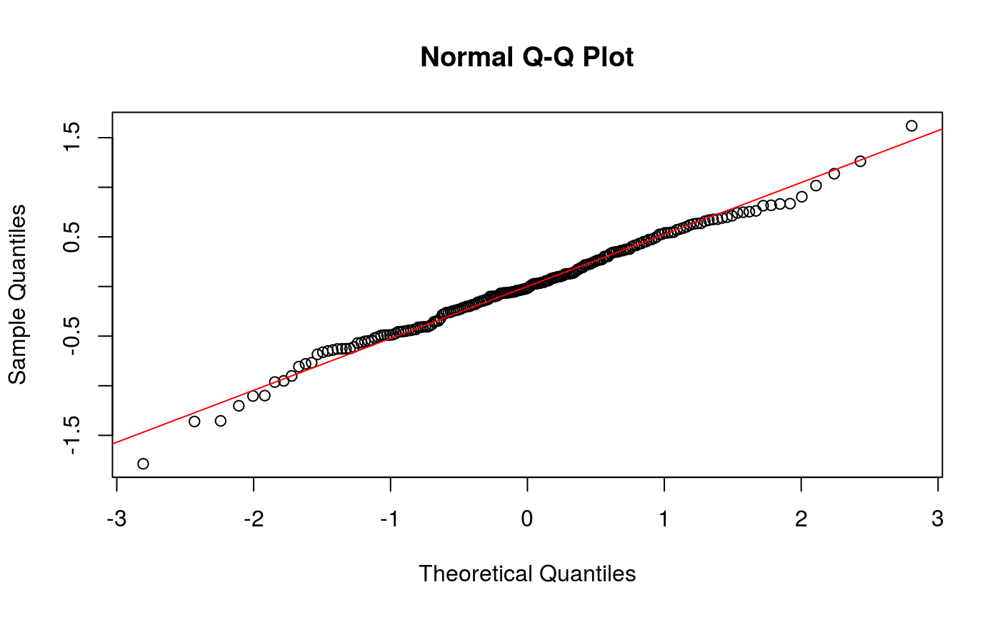
We could visualize this if we want by putting on predictor on the X, and using color to disinguish the other predictor. That said, it is very difficult to make scatterplot visualizations with multiple numeric predictors, especially since we can’t draw two trend lines in one set of axes.
ggplot(crabs, aes(x = carapace_length, y = body_depth, color = carapace_width)) + geom_point(size = 2.5) + # i like the plot with bigger points labs(x = "Carapace length (mm)", y = "Body depth (mm)", color = "Carapace width (mm)") + scale_color_distiller(palette = "Reds") + annotate("text", x = 20, y = 30, label = "R^2 == 0.977", parse=T, size=5) + theme(legend.position = "bottom") # again my personal preference
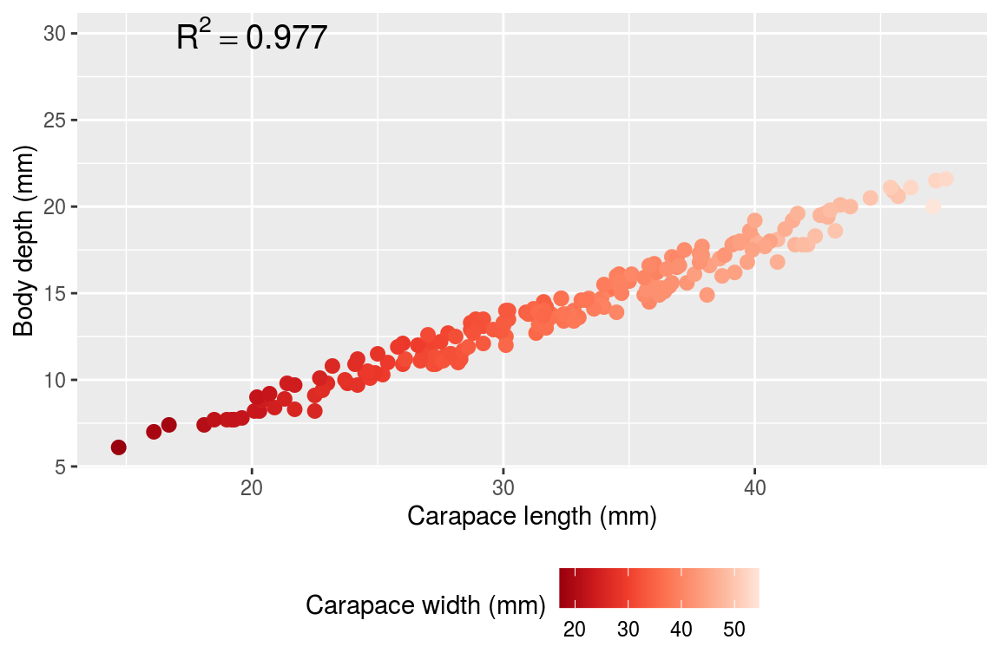
LM with interaction effects
So far, we have fit TWO models that have multiple predictors: 1) using color and carapace length, and 2) using carapace width and carapace length. Both models made the assumption that all predictors are independent of one another, e.g. carapace width and length are independent (in statistical terms, we’d say those models used “additive effects”). Of course, this is unlikely to be the case. In addition, it is possible that the effects of carapace length on body depth depend on carapace width, and vice versa. We would call this an interaction effect.
As a general rule, when you have multiple predictors for a linear model, it is usually a good idea to FIRST run the model assuming an interaction effect. If the interaction effect is not significant, use an additive model instead. If the interaction effect IS significant, ignore the additive effects and report only on the interaction effects. Indeed, if there is a significant interaction, it no longer makes sense to focus on individual contributions.
Example #1
Previously, we looked at the explanatory power of carapace length and color on body depth as independent effects. What if they are not independent, however? Looking at the visualization we made from this model, we see that the two regression lines for each crab color are roughly parallel - this suggests that the relationship between carapace length and body depth is consistent regardless of color. This would mean NO interaction effect, but we can formally test this out by adding an interaction term to the model:
# interact by using * instead of + for predictors model_fit <- lm(body_depth ~ carapace_length * color, data = crabs) summary(model_fit)
##
## Call:
## lm(formula = body_depth ~ carapace_length * color, data = crabs)
##
## Residuals:
## Min 1Q Median 3Q Max
## -1.22825 -0.19428 -0.01018 0.22544 1.01383
##
## Coefficients:
## Estimate Std. Error t value Pr(>|t|)
## (Intercept) -0.667829 0.165192 -4.043 7.59e-05 ***
## carapace_length 0.440842 0.005358 82.282 < 2e-16 ***
## colororange 0.327083 0.252010 1.298 0.19585
## carapace_length:colororange 0.022331 0.007655 2.917 0.00394 **
## ---
## Signif. codes: 0 '***' 0.001 '**' 0.01 '*' 0.05 '.' 0.1 ' ' 1
##
## Residual standard error: 0.368 on 196 degrees of freedom
## Multiple R-squared: 0.9886, Adjusted R-squared: 0.9885
## F-statistic: 5681 on 3 and 196 DF, p-value: < 2.2e-16In this output…
- carapace_length is the independent coefficient for carapace_length
- colororange is the independent coefficient for color
- carapace_length:colororange is the interaction effect coefficient for caparace length x color, and it is in fact significant at P=0.00394!! Indeed, there is a significant difference in trend between crab colors. However it’s quite hard to see in the plot - this is a great example of when statistical significance corresponds to only moderate, in this case, small, effect size.
Our residuals are also normally distributed:
augment(model_fit) -> augmented_fit qqnorm(augmented_fit$.resid) qqline(augmented_fit$.resid, col="red")
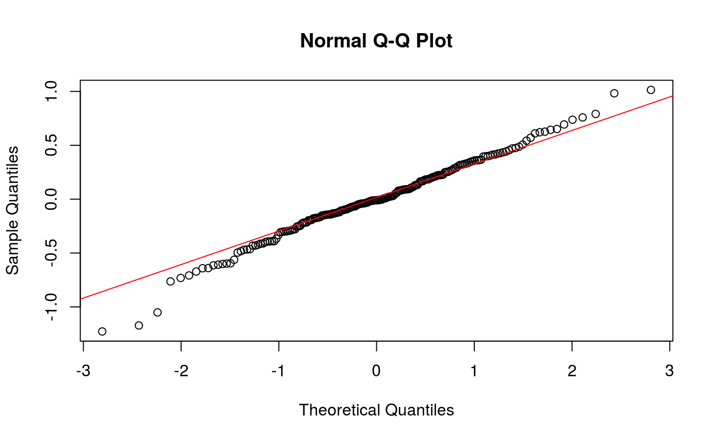
Upon finding a significant interaction effect, we promptly ignore any independent effects - since the interaction tells us these variables are not independent, it does not make sense to consider their independent influence on body depth. We have evidence that the way that carapace length affects body depth depends on color! Similarly, the way that color affects body depth depends on carapace length.
The best way to interpret this model is not to focus on the interaction term coefficient (they’re a little tricky..), but rather to make a plot like we did earlier with the two slopes, and see how those slopes potentially cross or interact, or in this case are only barely non-parallel. In fact, although small, these slopes are NOT identical and the lines are NOT exactly parallel - there is a significant interaction! However, it is of course a very small effect size. The punchline here is that the interaction is significant, so we have evidence that carapace length and color INTERACT when explaining body depth.
ggplot(crabs, aes(x = carapace_length, y = body_depth, color = color)) + geom_point() + labs(x = "Carapace length (mm)", y = "Body Depth (mm)", color = "Crab color") + scale_color_manual(values = c("blue", "orange")) + geom_smooth(method = "lm") + annotate("text", x = 20, y = 30, label = "R^2 == 0.988", parse=T, size=5)
## `geom_smooth()` using formula 'y ~ x'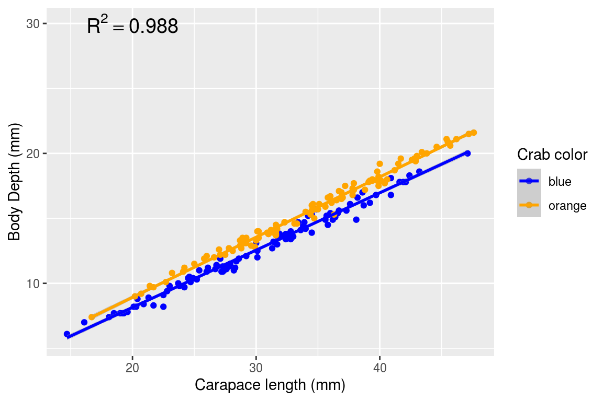
NOTE: It is possible to directly specify the interaction effect to the linear model like so - in fact the interaction effect is a third term in the model:
model_fit <- lm(body_depth ~ carapace_length + color + carapace_length:color, data = crabs) summary(model_fit)
##
## Call:
## lm(formula = body_depth ~ carapace_length + color + carapace_length:color,
## data = crabs)
##
## Residuals:
## Min 1Q Median 3Q Max
## -1.22825 -0.19428 -0.01018 0.22544 1.01383
##
## Coefficients:
## Estimate Std. Error t value Pr(>|t|)
## (Intercept) -0.667829 0.165192 -4.043 7.59e-05 ***
## carapace_length 0.440842 0.005358 82.282 < 2e-16 ***
## colororange 0.327083 0.252010 1.298 0.19585
## carapace_length:colororange 0.022331 0.007655 2.917 0.00394 **
## ---
## Signif. codes: 0 '***' 0.001 '**' 0.01 '*' 0.05 '.' 0.1 ' ' 1
##
## Residual standard error: 0.368 on 196 degrees of freedom
## Multiple R-squared: 0.9886, Adjusted R-squared: 0.9885
## F-statistic: 5681 on 3 and 196 DF, p-value: < 2.2e-16Example #2
Let’s do another interaction model by considering two categorical predictors, sex and color. This can be visualized with an interaction plot which explictly show how the mean response (here, mean body depth) depends on levels of two categorical predictor:
crabs %>% ## get mean body depth per group first group_by(sex, color) %>% summarize(mean_body_depth = mean(body_depth)) %>% ggplot(aes(x = sex, y = mean_body_depth, color = color)) + geom_point() + geom_path(aes(group = color)) + scale_color_manual(values=c("blue","orange"))
## `summarise()` regrouping output by 'sex' (override with `.groups` argument)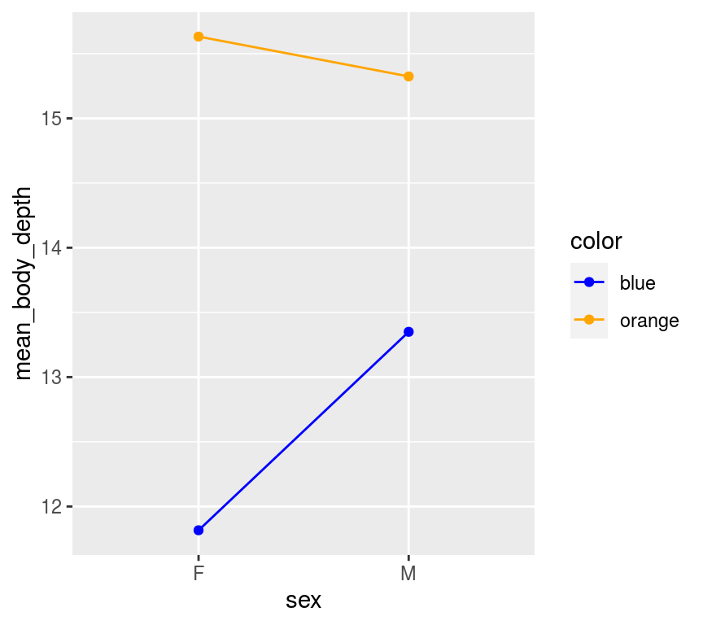
This plot suggests potential interaction effect! It seems female orange crabs have higher mean body depths compared to male orange crabs, but the opposite appears true blue. Notably, you see the slopes of these lines do not match. (Lines have the same slope - the effect of sex does NOT appear to depend on Color.) A linear model will tell us if this potential interaction is significant - but note the tiny tiny breaks on the Y-axis? If there is a significant interation, it will likely have a very small effect size.
Let’s go ahead and see:
# interact by using * instead of + for predictors model_fit <- lm(body_depth ~ sex * color, data = crabs) summary(model_fit)
##
## Call:
## lm(formula = body_depth ~ sex * color, data = crabs)
##
## Residuals:
## Min 1Q Median 3Q Max
## -7.924 -2.224 0.059 2.250 6.650
##
## Coefficients:
## Estimate Std. Error t value Pr(>|t|)
## (Intercept) 11.8160 0.4349 27.167 < 2e-16 ***
## sexM 1.5340 0.6151 2.494 0.0135 *
## colororange 3.8160 0.6151 6.204 3.21e-09 ***
## sexM:colororange -1.8420 0.8699 -2.118 0.0355 *
## ---
## Signif. codes: 0 '***' 0.001 '**' 0.01 '*' 0.05 '.' 0.1 ' ' 1
##
## Residual standard error: 3.075 on 196 degrees of freedom
## Multiple R-squared: 0.2058, Adjusted R-squared: 0.1936
## F-statistic: 16.93 on 3 and 196 DF, p-value: 8.131e-10In this output…
- sexM is the independent coefficient for sex
- colororange is the independent coefficient for color
- sexM:colororange is the interaction effect coefficient for sex x color, and it is moderately significant at P=0.0355.
And, residuals again are ok:
augment(model_fit) -> augmented_fit qqnorm(augmented_fit$.resid) qqline(augmented_fit$.resid, col="red")
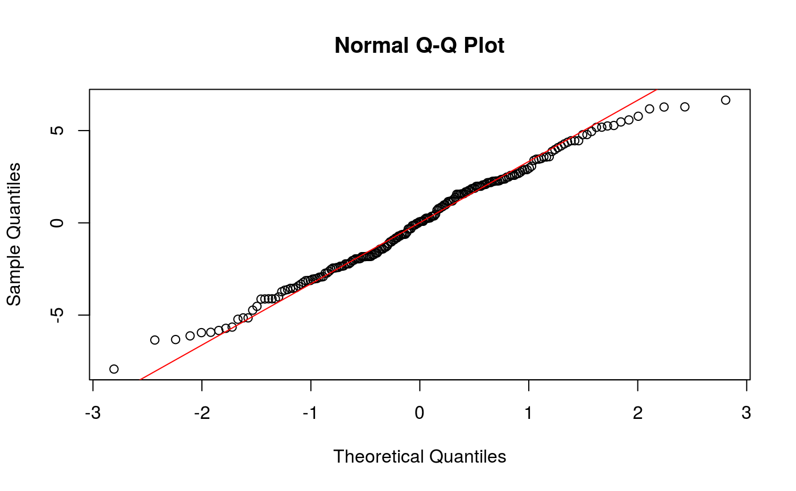
The best way to interpret this model is to a) identify if an interaction is significant, and b) compare the means with an interaction plot. We’ve basically done all those steps, so we are set!